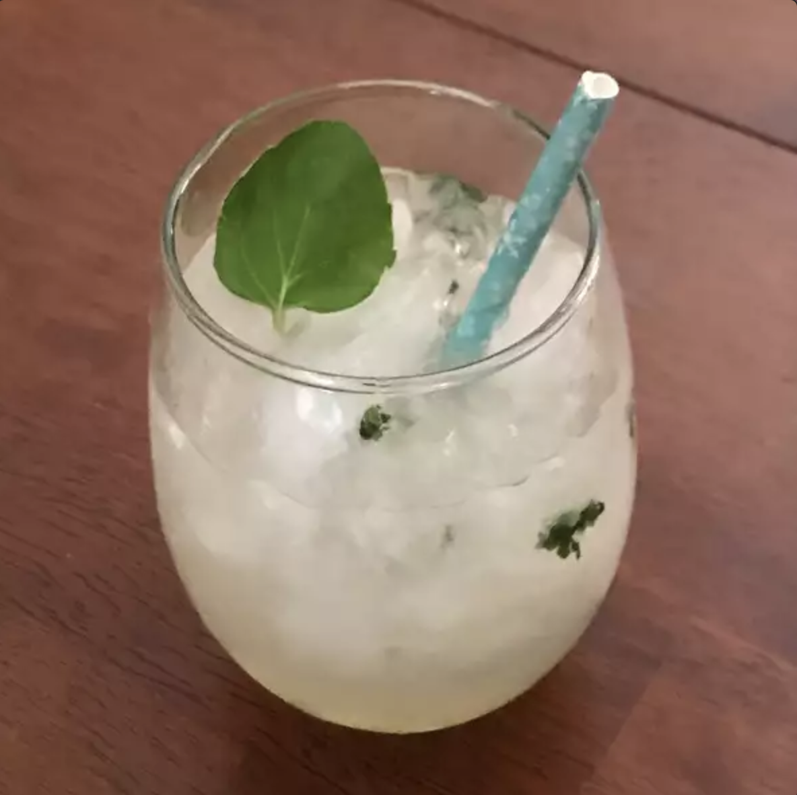

Home
Alcohol-Free Mint Julep
Recipe by SHOWPONIE

Alcohol-Free Mint Julep served with a straw
A delicious Alcohol-Free drink that delivers a satisfying sip that gets you in the summer mood
Ingredients
- 1/4 cup water
- 1/4 cup sugar
- 1 tablespoon chopped fresh mint leaves
- 2 cups crushed ice
- 1/2 cup prepared lemonade
- Fresh mint sprigs
Directions
- In a small saucepan, combine the water, sugar and 1 tablespoon of chopped mint.
Stir and bring to a boil. Cook until sugar has dissolved, then remove from
heat and set aside to cool. After about an hour, strain out mint leaves.
- Fill 2 cups or frozen goblets with crushed ice. Pour 1/2 of the lemonade into
each glass and top with a splash of the sugar syrup. Garnish each with a mint
sprig and a straw. Serve on a silver platter.